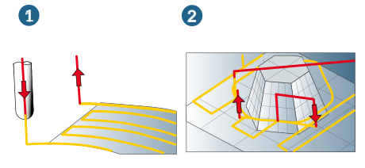
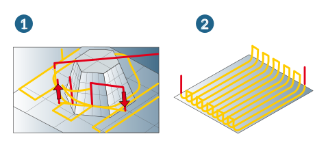

Macros
Additional movements to vertical infeed and retract movements that define a gentle approach and retract behavior at the calculated milling paths.
Macros are only executed if they do not result in a collision with neighboring surfaces.
Automatic
Length: Defines the length of the approach or retract movement.
Side clearance/Axial clearance: Clearance in the axial or X/Y direction that can be travelled without a collision.
Max. axial lift: Maximum lifting movement in the axial direction.
Feedrate macros: Various feedrate values for approach and retract macros. Default = Feedrate XY.
Manual
The tool is approached or retracted either in a Perpendicular, Circular or Tangential manner.
The retraction can also be performed as a Ramp. These additional movements are only ever performed if they do not result in a collision with neighboring surfaces.
The approach or retract movement is performed smoothly in a circular motion.
Approach macro / Retract macro
Retract macros are additional movements during infeed on the first milling path of a job, infeeds between the milling paths via the clearance plane or clearance distance. The following approach macros are available depending on the machining cycle: Axial, Perpendicular, Circular, Tangential as well as the Ramp macro for level-by-level material removal.
Note
During roughing, the approach macros only apply to the Finish pass during machining parallel to the axis.
Retract macros are additional motions during retraction after the last milling path of a cycle, retraction for horizontal stepover between the milling paths via the clearance plane or clearance distance. The following approach macros are available depending on the machining cycle.
Axial (1): Linear movement along the tool axis towards or away from the part. Enter length of movement. Closed and concave (inner) contours.
Circular (2): Approach and retract movements are performed in a quarter circle. Enter radius of the circle.
|  |
All circular movement macros are split into G1-straights.
Profile-oriented machining (1): Linear movements along the surface tangent towards or away from the contact point. Closed and concave (inner) contours.
Level-by-level machining (2): Approach and retract movements are performed in the machining plane along the contour tangent.
|  |
Ramp (1): this approach macro is exclusively available for level-by-level machining. Soft cutting along the path. Applicable for machining in tight areas where the first infeed for finishing could lead to contour violations or collision due to peaks in the material.
Return macros (2): Return macros are possible during machining with alternating orientation (zigzag strategies). The following applies here: the horizontal stepover between the milling paths takes place via the clearance distance or clearance plane. The activated approach and retract macro is carried out during each retract and infeed movement.
|  |
Macros normal to surfaces: The approach and retract macros are executed in the direction of the surface normals.
Macro simultaneous: Available for the cycles 5X Z Level Finishing, 5X Swarf Cutting 1 Curve and 5X Shape Offset Finishing. The transition to the macro movement takes place without abruptly changing direction and without slowing down the machining speed. Visible machining marks are avoided.
(1) Not activated, (2) Activated.